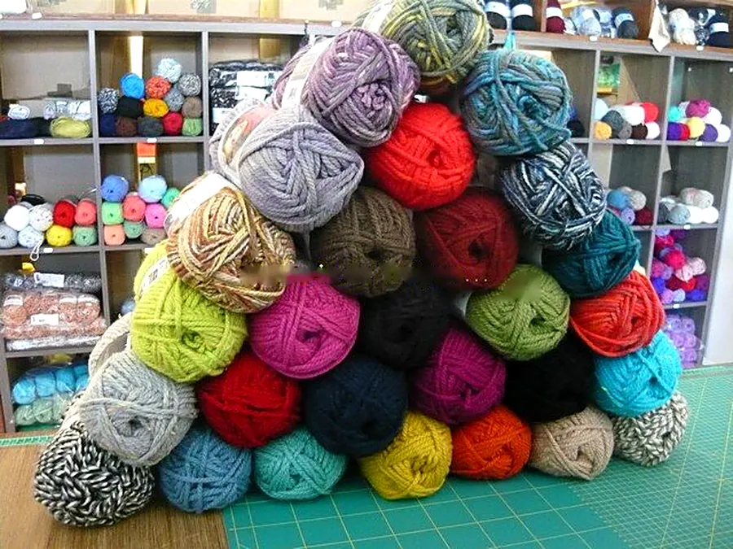
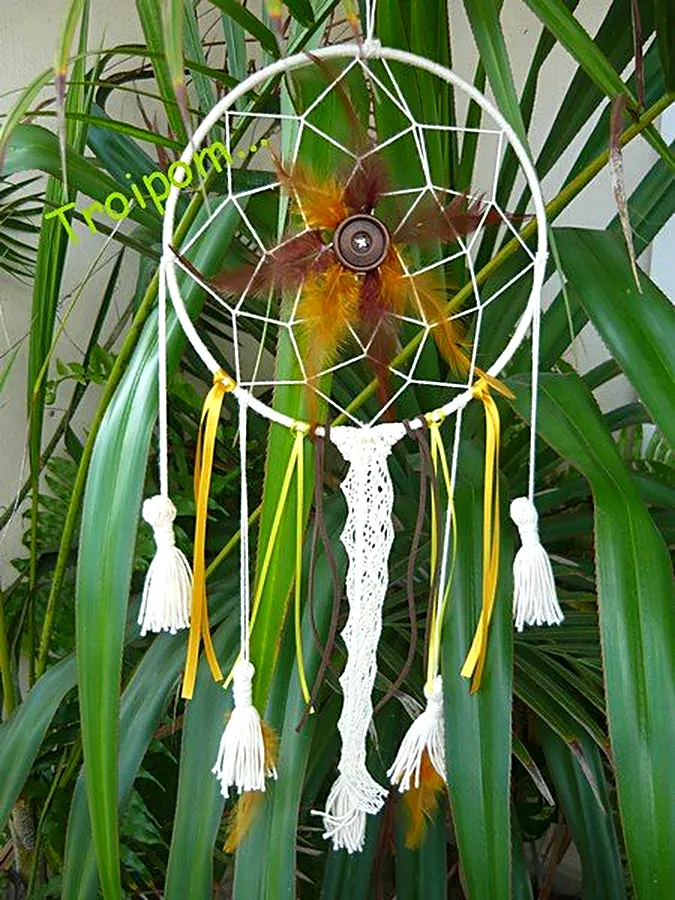
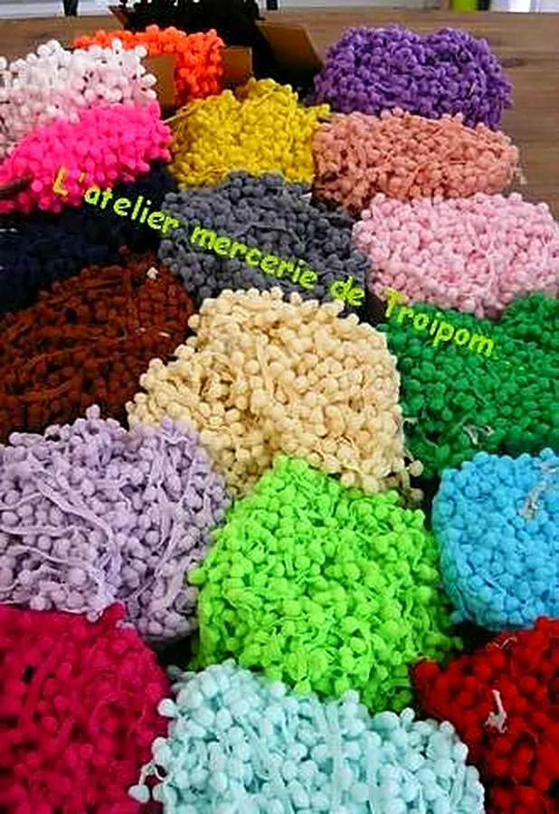
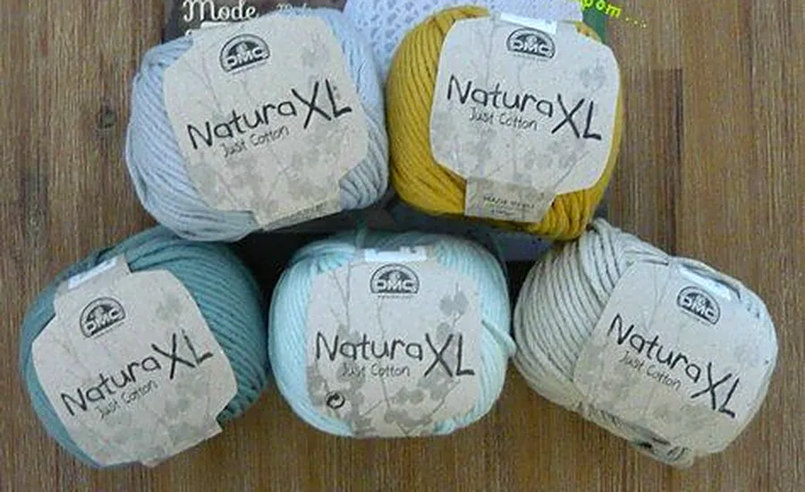
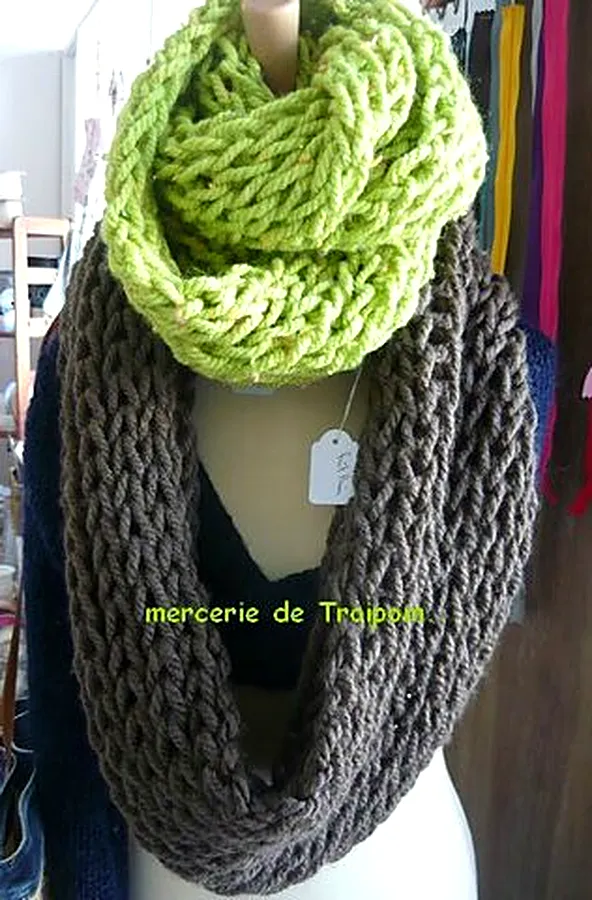
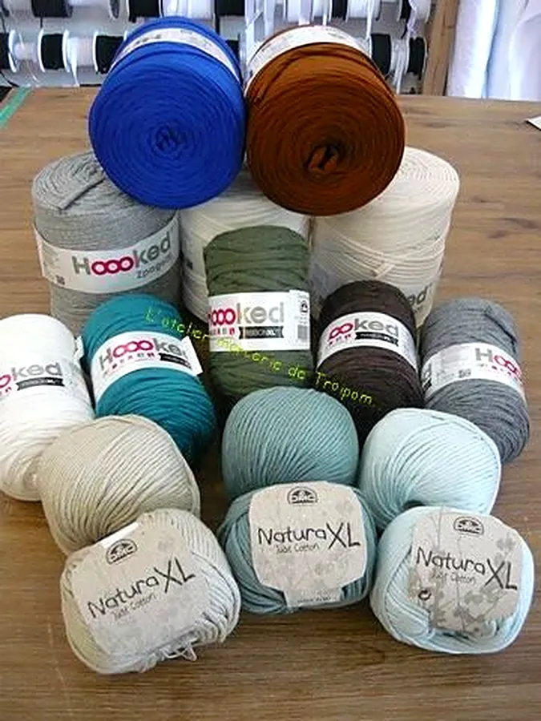
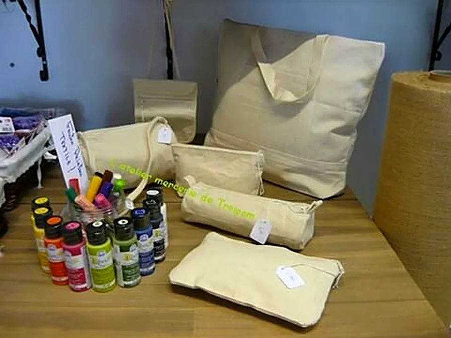
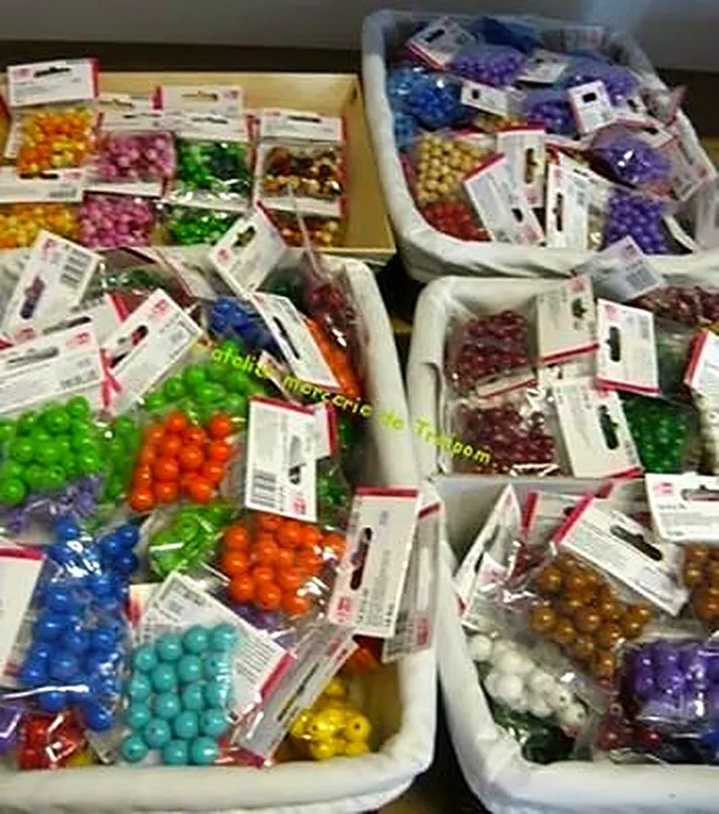
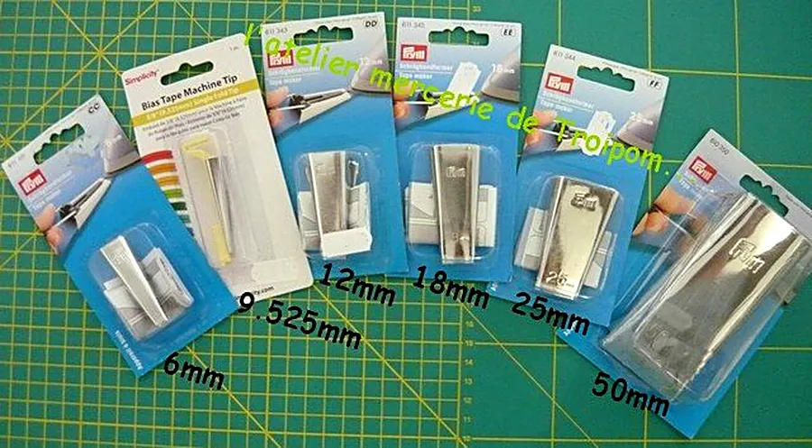
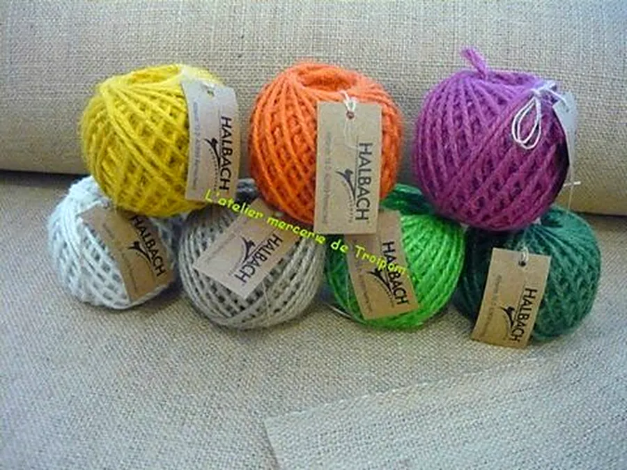

Publication du 5 novembre 2026
« Un fil chenille un peu plus épais ;) Big Darling ! Effet un peu moucheté ;) disponible en 6 coloris… »
Les nouveautés arrivent régulièrement : elles sont annoncées sur la page Facebook de l'atelier.

Mercerie créative · Saint-Pierre, La Réunion
Tout autour des fils et du tissu… tricot, crochet, couture, patchwork ! Ventes et conseils.
Du mardi au samedi, 9h00 – 17h20
90 rue du Four à Chaux, Saint-Pierre · 0262 26 14 37
L'atelier
Au 90 rue du Four à Chaux, L'atelier mercerie de Troipom réunit tout ce qu'il faut pour coudre, tricoter, crocheter et assembler un patchwork : fils, pelotes, galons, biais, gabarits et mille petites trouvailles.
« Retrouvez-moi dans ma mercerie pour la couture, le tricot, le crochet et le patchwork ! »
Ici, on vient chercher ses fournitures et on repart aussi avec des conseils, des trucs et astuces pour réaliser son projet, du premier point jusqu'à la dernière finition.

Les univers
Quatre passions réunies dans une seule boutique, avec les conseils de la maison.
Biais de toutes les tailles, du 6 mm au 50 mm, et le bon retourne-biais pour des finitions assorties à vos vêtements, sacs et patchworks.
D'après le blog de l'atelierDes pelotes douillettes, comme la Bravo Big : « 1 pelote = 1 snood », aiguille n°10, pour un hiver tout chaud.
D'après le blog de l'atelierNatura XL de DMC en 100 % coton, Hooked Spaghetti et Ribbon XL : de quoi crocheter tapis, paniers et sacs.
D'après le blog de l'atelierGabarits, règles, livres et patrons Marti Michell : hexagones du « jardin de grand-mère » et log cabin, accessibles même aux débutantes.
D'après le blog de l'atelierEn ce moment à la boutique
Publication du 5 novembre 2026
« Un fil chenille un peu plus épais ;) Big Darling ! Effet un peu moucheté ;) disponible en 6 coloris… »
Les nouveautés arrivent régulièrement : elles sont annoncées sur la page Facebook de l'atelier.
Les trouvailles
Quelques trésors partagés par l'atelier sur son blog : de quoi donner des idées pour le prochain projet.






Faites glisser pour découvrir toutes les trouvailles →

Ventes et conseils
« Je vous explique avec plaisir lors de votre passage ! »
Venez avec votre idée : un vêtement, un sac, un plaid, un patchwork.
Choisissez fils, tissus et fournitures parmi les couleurs de la boutique.
Repartez avec les trucs et astuces pour réussir votre projet.
Offrir pour Noël
Pour une passionnée de tricot, de crochet ou de couture, un cadeau choisi chez Troipom fait toujours mouche.
De quoi tricoter un snood moelleux, ou un fil chenille tout doux.
Gabarits et règles pour assembler de jolis hexagones.
Sacs et trousses en coton, feutres et peinture textile pour un cadeau fait main.
Un cadeau choisi avec les conseils de L'atelier mercerie de Troipom
Venir à la boutique
Adresse · 90 rue du Four à Chaux, 97410 Saint-Pierre
Téléphone · 0262 26 14 37
E-mail · ateliermercerie.troipom@orange.fr
🅿 Nouveau parking à 2 mn à pied !
